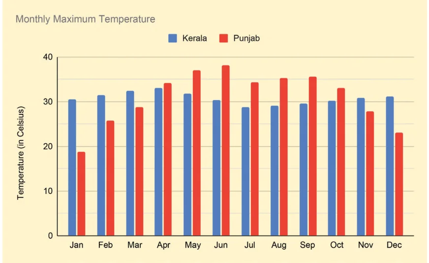
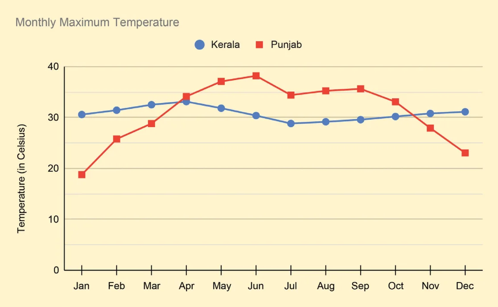
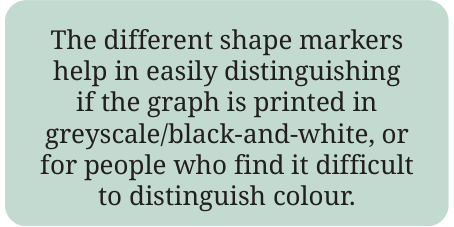
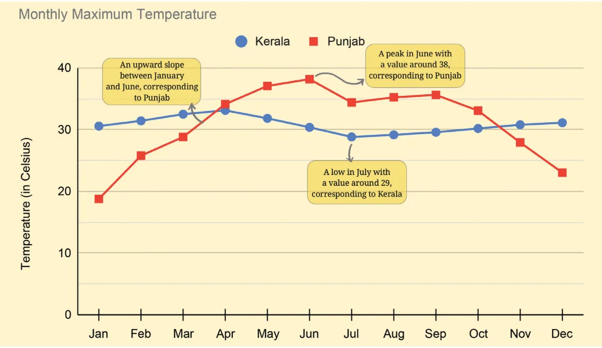

So far we have learnt how to read and make pictographs, bar graphs, clustered-bar graphs, and dot plots. We now examine some more ways of visualising data.
Line Graphs
Temperature
The following figure is a clustered-column graph that shows the monthly maximum temperature in Kerala and Punjab in 2023.

Now, observe the following graph. Do both these graphs represent the same information?

We call such a graph made up of lines a line graph. Line graphs are generally used to visualise data across time. How do we get the maximum temperature over a month in a state? There could be a few weather stations across the state that regularly track the local temperature. We can get the monthly maximum temperature by looking at the maximum value among all the values recorded across the state.
When we try to understand how the data is collected or produced, we gain a clearer idea of its scope and can interpret it more meaningfully. It also helps us identify any limitations, such as bias or missing information, and decide how confidently we can draw conclusions from the data.
To identify and interpret the information presented, let us follow a two-step process.
Step 1: Identify what is given
Notice how the graph is organised, what scale is used, and what patterns the data shows.

- The data for each month for a city is marked and connected by lines to show the change over time. Kerala’s data is shown using blue circle marks connected by blue lines and Punjab’s data is shown in red.
- The horizontal line shows the months of the year. The vertical line shows the temperature in °C.

Step 2: Infer and interpret from what is given
Analyse and interpret each of the observations you made. Share appropriate summary/conclusion statements.
- In Punjab, the monthly maximum temperature increases from January to June, reaching a high of 38°C. Then, it reduces to just under 35°C in July, stays mostly flat till September, and then falls continuously till December, reaching about 23°C. January has the lowest among the monthly maximum temperature of about 19°C.
- Kerala’s trend is different — it stays mostly flat throughout the year. The peak is around 33°C in April and the lowest point is around 29°C in July. Notice that the monthly maximum temperatures in Kerala are similar both in summer and winter!
- In short, the temperature in Punjab varies more, reaching colder and warmer temperatures than in Kerala.
This can trigger questions in different directions, some of which can be answered using data. Here are some directions to think about —
- Why are the trends so distinct in these two states? What factors determine a region’s temperature?
- You might be curious to look at the trends of a few other states. Are there other types of trends that states exhibit?
- Which states show trends similar to Punjab’s? Is there anything common between these states?
- What would a plot of the monthly minimum temperatures for these states look like?
What thoughts or questions occur to you?